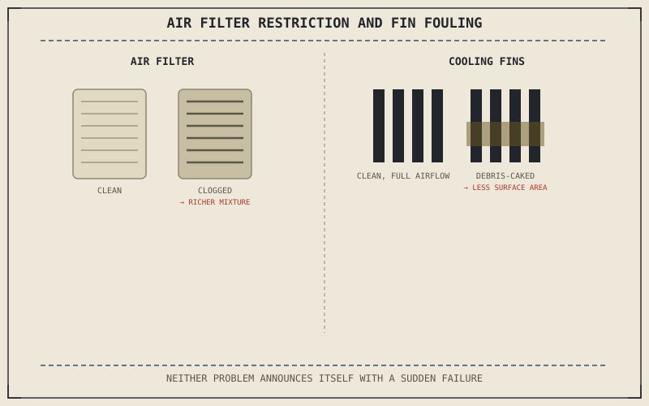

Chapter 2.3 named the air filter directly, in passing, as one source of friction and turbulence limiting an engine's volumetric efficiency — how much of a cylinder's theoretical capacity actually fills with air each cycle. That's true even for a clean filter. A dirty one restricts flow far more, and Chapter 2.15's cooling system faces a parallel problem: it only manages heat as well as its own components stay clean and intact.
Chapter 10.7 closed by naming air filter and cooling system maintenance as this chapter's subject, returning to mechanical maintenance territory. This chapter covers it.
A Dirty Air Filter Doesn't Just Restrict Air — It Skews the Mixture
Chapter 2.3 established that the throttle meters air and the fuel system matches fuel to it, and a progressively clogged air filter restricts that airflow more and more as debris accumulates, without the throttle position itself changing at all. On a carbureted or simply-mapped fuel system, this can push the actual air-fuel ratio richer than intended, since the same throttle opening now admits less air than the fuel system's calibration assumes — a dirty filter doesn't just reduce power through restriction, it can quietly degrade the precise air-fuel balance Chapter 2.3 described as essential to efficient combustion.
Air Cooling: Fin Cleanliness Directly Sets Cooling Capacity
Chapter 2.15 explained air cooling as depending entirely on airflow actually reaching the cylinder fins that conduct heat away from the engine. Dirt, oil residue, and road grime accumulating between those fins directly reduces the surface area actually exposed to passing air, degrading cooling capacity in exactly the way Chapter 2.15 warned reduced airflow already does under slow-traffic or hot-weather conditions — keeping fins clean is a direct, mechanical way of preserving the cooling margin Chapter 2.15 said air-cooled engines are already tuned conservatively to protect.
A dirty air filter doesn't just cost power through restriction — it can quietly skew the air-fuel ratio Chapter 2.3 described as essential, and dirty cooling fins directly reduce the surface area Chapter 2.15's air cooling depends on, in both cases degrading a system without an obvious warning sign.

An air filter shown clean versus clogged with restricted airflow shown skewing the air-fuel ratio richer, alongside cooling fins shown clean versus caked with debris, with reduced surface area exposed to passing air.
Liquid Cooling: Coolant Condition, Not Just Level
A liquid-cooled engine's coolant carries heat away from the engine to a radiator, and like brake fluid from Chapter 10.6, coolant degrades chemically over time even if the level in the reservoir stays constant — corrosion inhibitors break down, and the coolant's freeze and boil protection both drift from their intended range. Checking coolant level alone catches a leak, but it doesn't catch degraded coolant chemistry, which is why coolant has its own scheduled replacement interval separate from a simple level check, echoing the same distinction Chapter 10.6 drew for brake fluid.
A Common Misconception, Cleared Up Early
It's a common assumption that air filter and cooling maintenance are mainly about preventing a sudden, dramatic failure — a clogged filter causing a stall, or an empty radiator causing an overheat warning. Both systems more often degrade gradually and quietly first: a dirty filter skewing the mixture without stalling anything, or dirty fins or aging coolant reducing cooling margin without triggering an immediate warning, the same gradual-degradation pattern Chapter 10.3's oil discussion and Chapter 10.6's brake fluid discussion both already established for other systems.
Where This Leads
Regular, scheduled maintenance items have now been covered across nearly every system. Some maintenance instead depends on when and how a motorcycle is used, or not used, rather than a fixed interval. Chapter 10.9 turns to seasonal and storage maintenance next.
Key Concepts to Remember
- A clogged air filter restricts airflow and can skew the air-fuel ratio richer than intended, since fuel calibration assumes the filter's clean-condition airflow.
- Debris between cooling fins directly reduces the surface area air-cooled engines depend on, eroding the same conservative safety margin Chapter 2.15 described.
- Coolant needs scheduled chemical replacement, not just a level check, since corrosion inhibitors and temperature protection both degrade over time independent of level.
Cross-References
| ← Ch. 2.3 | Established the throttle metering air and the fuel system matching it; this chapter shows a dirty filter disrupting that matched relationship. |
| ← Ch. 2.15 | Established air and liquid cooling's dependence on airflow and coolant condition; this chapter shows fin cleanliness and coolant chemistry as the direct maintenance response. |
| ← Ch. 10.6 | Established brake fluid needing scheduled chemical replacement beyond a level check; this chapter applies the identical logic to engine coolant. |
| → Ch. 10.9 | Covers seasonal and storage maintenance, depending on usage patterns rather than a fixed interval alone. |